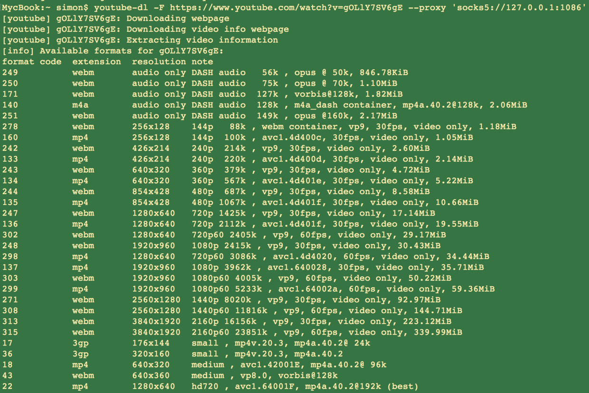
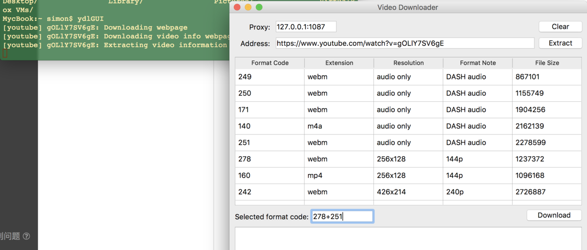

YouTube上有许多精彩视频，曾经chrome的应用商店里有一个叫VideoDownloader的插件可以一键下载YouTube视频，但是已经被Google封杀了。后来我发现了youtube-dl这个工具，它不仅可以用来下载YouTube视频，国内的一些视频站也可以用它进行下载。
这个程序是一个开源的python项目，详情可以访问它的官方网站。由于是开源项目，因此支持MacOS、Linux和Windows平台，可以在官网直接下载编译好的程序。
若需要使用源代码，可以使用pip安装到本地：sudo -H pip3 install --upgrade youtube-dl
YouTube上面视频和音频是分开存放的，当然也有合成好的，不过画质就比较一般了，想要下载高质量视频，就得分别下载音频和视频，然后再使用ffmpeg将他们合成在一起。ffmpeg的下载地址在这，这同样也是个开源项目，但是我们只下载它打包好的程序就可以了。
全都下载好后，可以把这些程序都放在同一个目录下，像这样，会有4个文件：
然后把该目录添加到PATH中，就可以在任意位置使用了。
youtube-dl的使用非常简单，选择好要下载的文件，它会自动调用ffmpeg合成音视频，不过就是没有GUI，每次使用都得输一串命令，而且对于国内用户，还需要指定代理服务器，更增加了命令的输入量。
- 获取视频信息：
youtube-dl -F https://www.youtube.com/watch?v=gOLlY7SV6gE --proxy 'socks5://127.0.0.1:1086'
这里我使用的是shadowsocks代理，地址和端口号可以在你的ss程序中找到，等待程序下载完成后，就会看到视频信息了。

- 下载视频
我们选择下载最高质量的音视频，通过观察视频信息可知，该视频最高质量为3840x1920 60fps，代号315，音频为码率149k的文件，代号251，然后下载这两个文件：youtube-dl -f 315+251 https://www.youtube.com/watch?v=gOLlY7SV6gE --proxy 'socks5://127.0.0.1:1086'
 程序默认将下载好的文件置于用户的根目录下。
程序默认将下载好的文件置于用户的根目录下。
虽说只输了两次命令，但是还是不够方便，不过好在程序开源，我们可以自己开发一个GUI。本文将使用PyQt5制作一个简单的GUI，实现可视化操作。其实做GUI就是要把命令行指令做进按钮里，再把它的输入输出显示在窗体上。有了这样的思路，我们首先来分析youtube-dl返回的数据。
以下是python代码：
import youtube_dl
ydl_opts = ({'outtmpl': '%(title)s%(ext)s',
'proxy': '127.0.0.1:1087'}) # 默认HTTP代理
# retrieve video information
with youtube_dl.YoutubeDL(ydl_opts) as ydl:
video = ydl.extract_info('https://www.youtube.com/watch?v=gOLlY7SV6gE',
download=False)把video打印出来查看，是一个巨大的字典，里面包含了视频的所有信息，我们需要的视频分辨率信息，都在该字典的formats键值中，而formats又是一个字典列表，该视频中的每个文件都是一个字典。
继续处理formats，得到需要的信息：
# sort information
formats = video.get('formats')
file_count = len(formats)
for f in formats:
format_code.append(f.get('format_id'))
extension.append(f.get('ext'))
resolution.append(ydl.format_resolution(f))
format_note.append(f.get('format_note'))
file_size.append(f.get('filesize'))使用get方法获得字典键值的好处就是，如果字典中不存在该键值，就会返回None，如果使用索引直接访问不存在的键值，则会抛出异常。
现在我们已经拿到了所需的全部数据，接下来就是要在窗体中显示了。在PyQt5中，QTableWidget可以做这件事：
self.tableWidget = QtWidgets.QTableWidget(Form)
self.tableWidget.setRowCount(main.file_count)
self.tableWidget.setColumnCount(5)然后使用循环将数据填入表格：
def FillInfo(w): # fill information into table
for i in range(0, file_count):
w.tableWidget.setItem(i, 0, QTableWidgetItem(format_code[i]))
w.tableWidget.setItem(i, 1, QTableWidgetItem(extension[i]))
w.tableWidget.setItem(i, 2, QTableWidgetItem(resolution[i]))
w.tableWidget.setItem(i, 3, QTableWidgetItem(format_note[i]))
w.tableWidget.setItem(i, 4, QTableWidgetItem(str(file_size[i])))youtube-dl的作者并没有给这个项目单独写一个文档，所有的信息都需要去源代码中看，经过阅读源代码，我终于找到了一个名为process_video_result的函数，可以指定下载哪个文件。它接受extract_info返回的字典对象，根据用户输入的命令行参数选择文件进行下载，所以我们只需要把需要下载的视频的format_id填入参数列表，再把视频信息字典传给函数，就可以实现指定下载的功能了。
创建一个编辑框，然后取得该编辑框的输入：
self.SeleEdit = QtWidgets.QLineEdit(Form)
self.SeleEdit.setObjectName("SeleEdit")
def download(self):
ydl.params = {'format': self.SeleEdit.text()}
try:
main.ydl.process_video_result(main.video)
except Exception as e:
pass应该像使用命令行程序那样输入format_id，对于两个文件的情况，youtube-dl只接受'video+audio'的形式，如果顺序颠倒则会抛出异常。

完整的代码可以在我的Github上找到。